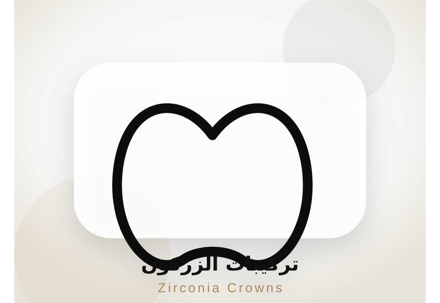

PATIENT GUIDE
تركيبات الزركون: قوة ومظهر طبيعي بتخطيط رقمي
تركيبات زركون ديجيتال بالكامل مناسبة لتعويض الأسنان التالفة أو تحسين الشكل مع الحفاظ على قوة التحمل والمظهر المتناسق.
السعر: يبدأ من 3,500 ج.م
احجز استشارة
متى نحتاج الزركون؟
يُستخدم في حالات الأسنان الضعيفة، المكسورة، أو بعد علاج العصب، وأحيانًا في الحالات التجميلية حسب تقييم الطبيب.
ما ميزته؟
الزركون يتميز بالقوة والمتانة ومظهر جمالي مناسب، وخاصة عند تنفيذه بتخطيط وتصميم رقمي.
كيف يتم التنفيذ؟
بعد الفحص والتحضير يتم أخذ المقاسات أو التخطيط الرقمي، ثم تصنيع التركيبة وضبطها لضمان الراحة والشكل الطبيعي.
أسئلة شائعة
هل الزركون مناسب للأسنان الأمامية؟
نعم في حالات كثيرة، لكن اختيار المادة النهائية يعتمد على درجة الشفافية المطلوبة.
هل التركيبات مؤلمة؟
يتم العمل تحت تخدير مناسب حسب الحالة.
كم تدوم التركيبات؟
تعتمد على جودة التنفيذ والعناية الشخصية والمتابعة الدورية.